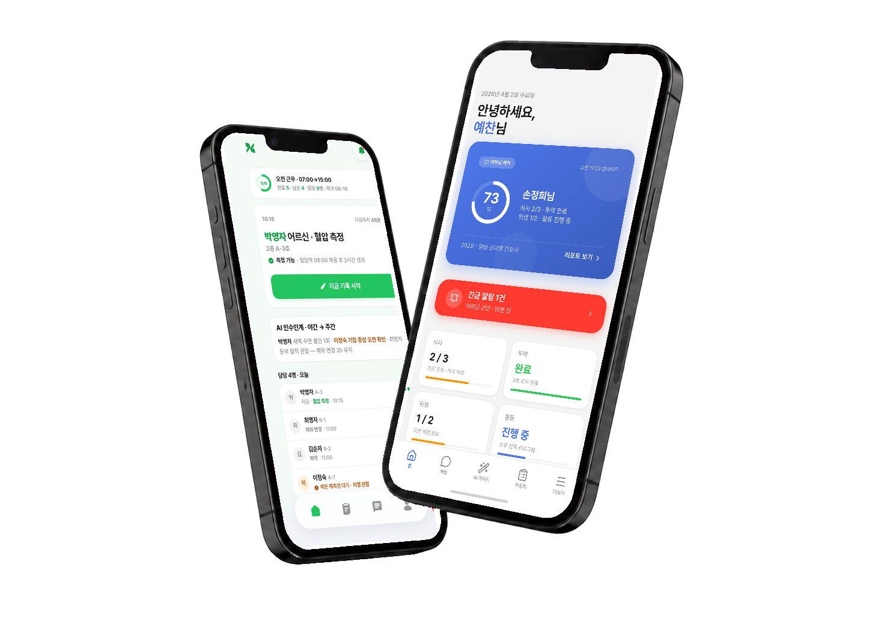
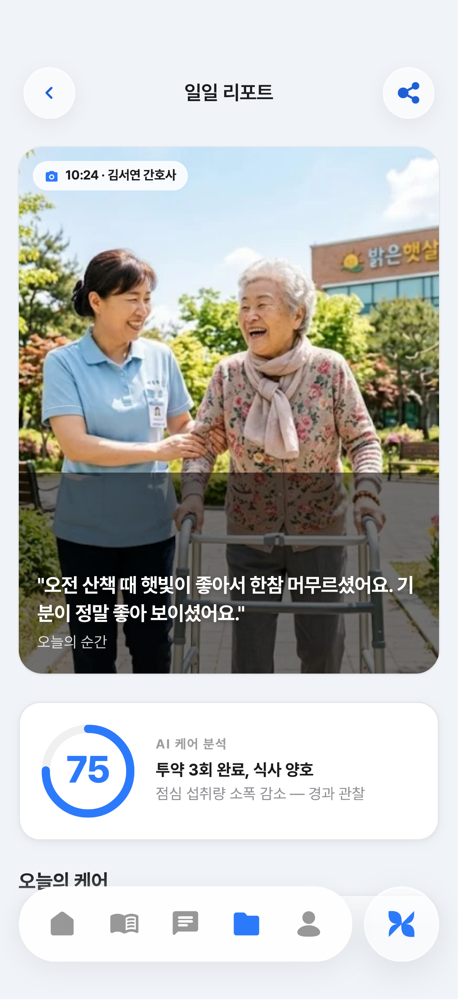
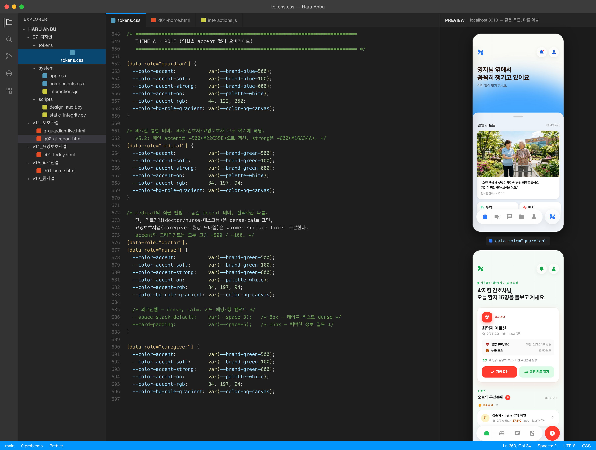

ONE RECORD, FOUR PERSPECTIVES
한 번의 기록이,
네 사람의 안부로.
요양보호사가 남긴 하루의 기록을
보호자·의료진·어르신, 각자의 언어로 전합니다.

오늘 하루도 안녕하셨습니다.시설 안의 돌봄과
시설 밖의 가족을 잇는 서비스
시설 밖의 가족을 잇는 서비스
ONE RECORD, FOUR PERSPECTIVES
요양보호사가 남긴 하루의 기록을
보호자·의료진·어르신, 각자의 언어로 전합니다.

01 / USER NEEDS
면회와 면회 사이, 가족에게는 정보의 공백이 생깁니다.
전화로 물으면 현장의 손이 멈추고, 참으면 하루를 모릅니다.
핵심 원칙 · 응대를 위한 별도의 기록을 만들지 않습니다.
02 / MARKET CONTEXT
65세 이상 스마트폰 보유율 76.6%(2023).
고령인구 비중 20.0%(2024.12), 초고령사회에 진입했습니다.
출처: KDI(2026.4) · 행정안전부 주민등록 인구통계
03 / SERVICE STRUCTURE
AI가 같은 기록을 역할별 정보로 정리해 전달합니다.
한 사람의 입력 → 네 사람의 연결
04 / SERVICE DEFINITION
시설 돌봄의 네 당사자를 위한 커뮤니케이션.
노인의료복지시설 6,139개소 · 24.3만명
가족에게는 안심을, 현장에는 간결함을.
역할에 따라 정보의 깊이와 표현을 조절합니다.
01 / FAMILY · DAILY REPORT
보호자 홈에서 일일 리포트로 이어지는 가장 짧은 동선.



식사·투약·활동을
한 장의 리포트로 정리합니다.
요양보호사의 한 줄과
사진이 오늘을 설명합니다.
AI 케어 점수는 진단이 아닌
오늘의 기록 요약입니다.
02 / FAMILY · AI GUIDE
기록을 이해하도록 돕는 안내.

답은 판단이 아닌
담당자에게 확인 요청으로 이어집니다.
03 / CARE TEAM
한 번의 입력을 역할에 맞게 공유합니다.


현장은 오늘의 업무를 체크하고,
의료진은 기록의 변화를 확인합니다.
04 / RESIDENT · TABLET
어르신의 첫 화면은 태블릿.
지금 할 일, 도움 요청, 가족 통화를
쉽게 찾고 누를 수 있게 남겼습니다.


05 / DESIGN SYSTEM
공통 레이아웃·간격·컴포넌트 위에
역할별 강조색을 적용했습니다.
